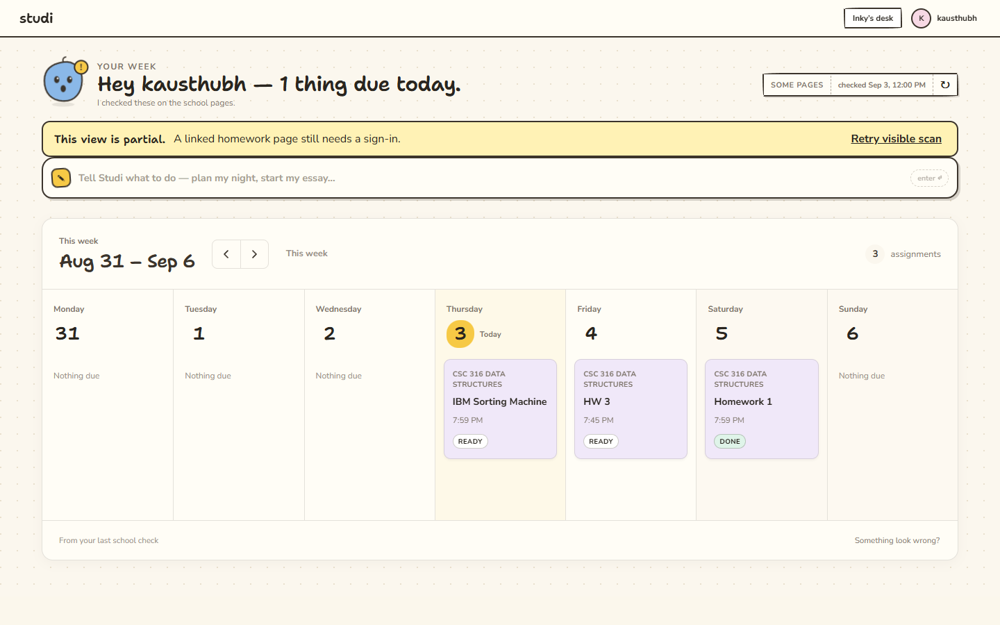
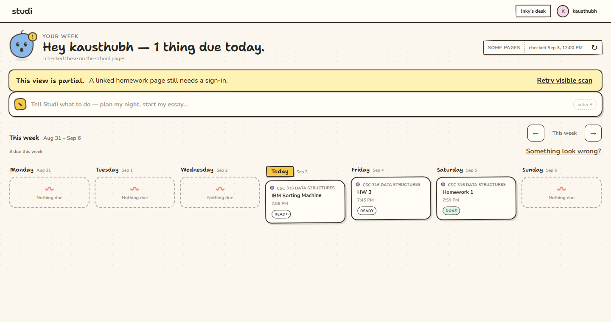
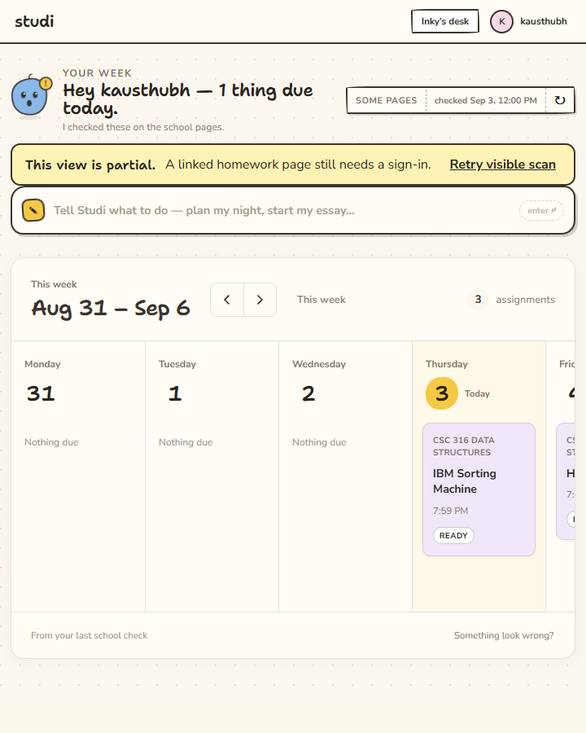

Browse your school weeks
Based on GitHub main c947820, in the isolated codex/week-navigation checkout. The original checkout remains on c5ec295 with its unfinished edits preserved.
Plan
- Replace the rolling five-day window with complete Monday–Sunday weeks.
- Add previous / next buttons, a date range, and a return to This week.
- Filter the board and its count to the selected week. Keep the greeting and Today marker tied to the actual local date.
- Check calendar boundaries, typecheck and build, exercise navigation in the UI, and capture a preview image.
- Attempt the test-studi persistent Electron feature pass; report any onboarding or auth boundary honestly.
Preview
Redesigned production renderer at 1440 × 900, using the existing preview fixture and a fixed September 3, 2026 clock. This image is sample data, not a live school scan.

Previous version

Redesign brief
The student needs to locate a deadline and move between weeks without losing their place. The date range leads, grouped arrows and return action sit beside it, and homework carries more visual weight than empty days.
Domain: school planner, due dates, class notes, highlighters, homework, and Inky's help. Color world: notebook cream, graphite ink, pencil yellow, lavender class tabs, mint completion marks, and warm paper rules. Signature: a handwritten calendar with a yellow Today marker, class-colored notes, quiet ruled days, and the real Inky mascot.
Direction: one paper sheet with subtle depth; 4px spacing rhythm, 24px toolbar padding, 40px navigation controls, 26px handwritten date range, 14px assignment titles, and 12px secondary day labels. Preserve the existing Nunito Sans / Shantell Sans fonts and product palette. Replace distant controls with one group, outlined empty cards with quiet text, and small inline dates with prominent day numbers. The toolbar wraps against its own container when an assignment drawer narrows the board.
Redesign verification
- Build and typecheck passed. All three calendar tests passed.
- Browser checks passed for repeated next/previous, return, assignment filtering, counts, Today state, keyboard Enter/Tab/Space, visible focus, feedback disclosure, and cross-year ranges.
- No page overflow at 1440, 1000, 760, and the app's minimum 720px width. Every week button remains at least 40px tall and wide. The 546px board beside an open drawer wraps its toolbar and still navigates.
- Long assignment and course titles wrap within their card. Empty weeks retain the same calendar structure. Screenshots were visually inspected at 1440 and 720px.
- A 540px browser stress check reached the existing 720px app minimum (also enforced by Electron); this is outside the supported desktop window range.
Smallest supported window

Verification — September 6, 2026
bun run typecheck: passed.bun run build: passed; existing dependency annotation and chunk-size warnings.node --experimental-strip-types --test tests/ui/week-calendar.test.mjs: three tests passed in America/New_York and UTC. Covers Sunday, leap days, both DST changes, adjacent weeks, year boundaries, and distant navigation.- Playwright against the production renderer: repeated next/previous, return to current week, correct assignment filtering/restoration, week count, unchanged today greeting, no false Today highlight, Enter/Tab/Space controls, and visible 2px keyboard focus all passed.
- At 1000 × 760, the board scrolls to the weekend within its container without overflowing the page. Assignment details still open after navigation.
- Cross-year UI label verified: “Dec 29, 2025 – Jan 4, 2026”.
- Browser console: only the existing missing favicon request; no application exceptions.
- Live Electron check stopped before the feature pass: the existing dedicated QA instance at loopback port 9222 returned
auth.status = signed_out, no week board, and “School onboarding is not ready.” Its runtime was the original checkout. The new feature has browser-renderer coverage, not signed-in Electron coverage. No profile, identity, or school data was changed.